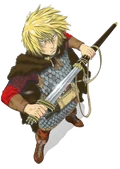

ᛅ Projeto de Web Coding
Este projeto tem como finalidade apresentar uma visão abrangente sobre Vinland Saga, destacando seus elementos históricos, narrativos e culturais. A obra, criada por Makoto Yukimura, é reconhecida por sua profundidade temática e por retratar com precisão diversos aspectos da Era Viking, explorando temas como guerra, honra, escravidão e a busca por um mundo ideal. O conteúdo aqui reunido busca relacionar fatos históricos reais ao desenvolvimento dos personagens e dos acontecimentos da série, oferecendo ao leitor uma compreensão mais completa sobre o contexto que inspirou a história. A proposta é proporcionar um espaço informativo, claro e acessível para estudantes, admiradores da obra e interessados na cultura nórdica.
